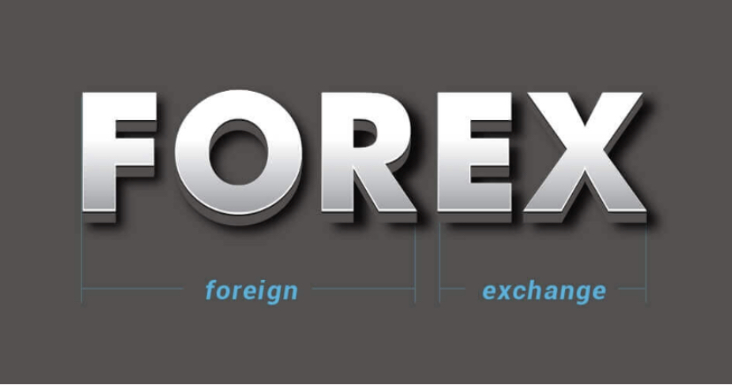
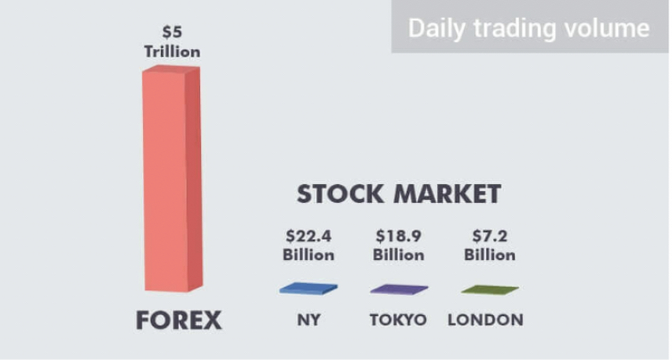

What Is Forex

Forex Trading:
Forex is the short form of "Foreign Exchange". It is also known as currency exchange,
or simply "FX". Forex is the platform where currencies are traded.
What does Foreign Exchange means?,
Fx is selling of one currency in order to buy another. All we
do in FX is Buying and Selling.
Again Forex Trading always involves selling one currency in order to buy another , which is why it is
quoted in pairs – the price of a forex pair is how much one unit of the base currency is worth in the
quote currency. ... Less frequently traded, these often feature major currencies against each other
instead of the US dollar.
It is the largest financial market in the world with a daily turnover of $5 trillion! It is huge even when
compared to the biggest stock exchange markets. Check the chart below.

Of course, the retail forex trading (what you want to do) doesn't make up the majority of the volume. The
daily trade volume of retail traders is around $1.5 trillion.
The biggest players in the forex market.
You must know who the big players are in the
FX market because they can change the currency rates in a blink of an eye. Traders who understand the main
obiectives of these players can make reasonable predictions about
future currency moves.
Do you know Mario Draghi, Janet Yellen and Angela Merkel? They are a few of the officials who can create chaos
in currency rates with just a few words in their speeches.
Forex traders indeed plan their trades by analyzing the most recent economic news and geopolitical
developments, as well as the latest announcements from G-7 key officials.
G-7 (Group of Seven) is a forum of the world's 7 most developed economies: the U.S., Germany,
U.K., France, Japan, Canada and Italy.
The main people to follow and listen from these countries are:
- Head of the central bank
- Prime minister
- President of the country
- The most traded currency pair is EUR/USD so the most influential persons in forex are:
- Chair of the US Federal Reserve Bank
- Head of the European Central Bank
- Chancellor of Germany
- President of the U.S.
1. Governments and central banks
The biggest players of the forex market are governments and central banks that buy and sell currencies to balance the economic growth and price stability of their nations. The amount of money used by central banks is enormous so their actions have a deep impact on the currency markets.
That's why every forex trader wait with bated breath whenever the chairman of U.S. or European central bank is speaking publicly; one sentence in their speech can create big fluctuations in the market.
Commercial and investment banks
Big banks trade billions of dollars daily. They make transactions with each other, with their customers or they themselves speculate on the forex market.
The 5 biggest banks are:
1. Wells Fargo & Co.
2. Industrial & Commercial Bank of China
3. JP Morgan Chase & Co.
4. China Construction Bank
5. Bank of America
2. Large corporations
Large corporations control large amounts of money so when they move their assets in bulk, it can influence the currency rates. For example, when the biggest insurance companies in Japan started to move their assets out of the country because of the decreasing value of yen and decreasing interest rates, the yen fell even more.
3. Individual traders
The most popular forex trader is George Soros who is famous for breaking the Bank of England and earning $1 billion in a day. He also earned $790 million by speculating on the fall of Thai baht. Traders like George Soros usually operate hedge funds with large resources. They can create strong impact on a nation's economy and currency rate.